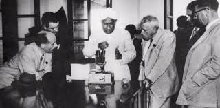
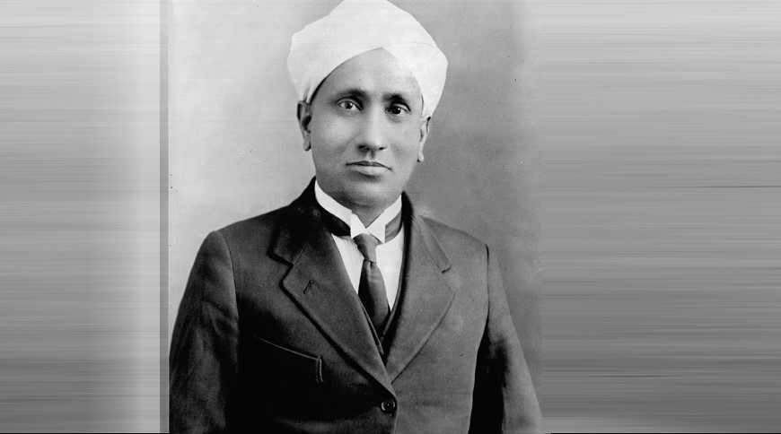
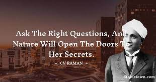
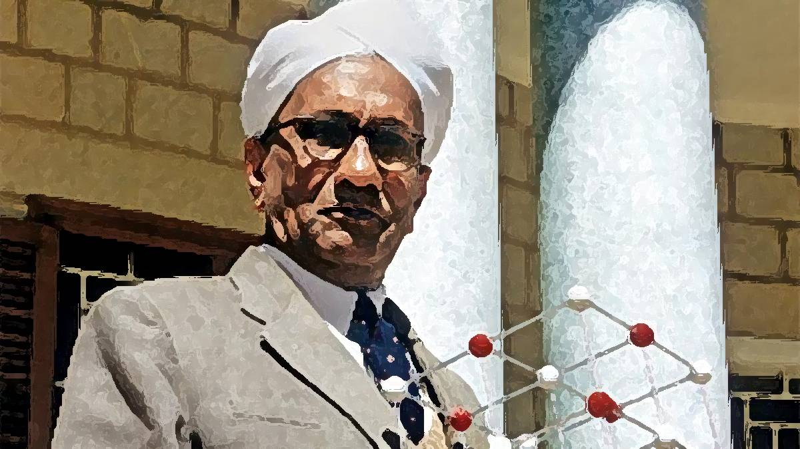

Sir Chandrasekhara Venkata Raman was an Indian physicist known for his work in the field of light
scattering. Using a spectrograph that he developed, he and his student K. S. Krishnan discovered that when
light traverses a transparent material, the deflected light changes its wavelength and frequency. This
phenomenon, a hitherto unknown type of scattering of light, which they called "modified scattering" was
subsequently termed the Raman effect or Raman scattering. Raman received the 1930 Nobel Prize in Physics for
the discovery and was the first Asian to receive a Nobel Prize in any branch of science.
In 1917, he was appointed the first Palit Professor of Physics by Ashutosh Mukherjee at the
Rajabazar Science College under the University of Calcutta. On his first trip to Europe, seeing the
Mediterranean Sea motivated him to identify the prevailing explanation for the blue colour of the sea at the
time, namely the reflected Rayleigh-scattered light from the sky, as being incorrect. He founded the Indian
Journal of Physics in 1926.
Life Journey
Early Life & Education
C. V. Raman was born in Tiruchirapalli, Tamil Nadu to Tamil Brahmin parents, Chandrasekhara Ramanathan Iyer and Parvathi Ammal.He was the second of eight siblings.His father was a teacher at a local high school, and earned a modest income. In 1892, his family moved to Visakhapatnam in Andhra Pradesh. Raman was educated at the St Aloysius' Anglo-Indian High School, Visakhapatnam.He passed matriculation at age 11 and the First Examination in Arts examination with a scholarship at age 13, securing first position in both under the Andhra Pradesh school board examination. In 1902, Raman joined Presidency College in Madras where his father had been transferred to teach mathematics and physics. In 1904, he obtained a B.A. degree from the University of Madras, where he stood first and won the gold medals in physics and English.At age 18, while still a graduate student, he published his first scientific paper on "Unsymmetrical diffraction bands due to a rectangular aperture" in the British journal Philosophical Magazine in 1906.He earned an M.A. degree from the same university with highest distinction in 1907.His second paper published in the same journal that year was on surface tension of liquids.

Career
Raman followed suit and qualified for the Indian Finance Service achieving first position in the entrance examination in February 1907.He was posted in Calcutta as Assistant Accountant General in June 1907.It was there that he became highly impressed with the Indian Association for the Cultivation of Science, the first research institute founded in India in 1876.He immediately befriended Asutosh Dey, who would eventually become his lifelong collaborator, Amrita Lal Sircar and Ashutosh Mukherjee, executive member of the institute and Vice-Chancellor of the University of Calcutta. With their support, he obtained permission to conduct research at IACS in his own time even "at very unusual hours," as Raman later reminisced.Up to that time the institute had not yet recruited regular researchers,or produced any research paper.Raman's article "Newton's rings in polarised light" published in Nature in 1907 became the first from the institute.The work inspired IACS to publish a journal, Bulletin of Indian Association for the Cultivation of Science, in 1909 in which Raman was the major contributor

Personal Life
Raman married Lokasundari Ammal on 6 May 1907.It was a self-arranged marriage and his wife was 13 years old. His wife later jokingly recounted that their marriage was not so much about her musical prowess (she was playing veena when they first met) as "the extra allowance which the Finance Department gave to its married officers." The extra allowance refers to an additional INR 150 for married officers at the time. Soon after they moved to Calcutta in 1907, the couple were accused of converting to Christianity. It was because they frequently visited St. John's Church, Kolkata as Lokasundari was fascinated with the church music and Raman with the acoustics. They had two sons, Chandrasekhar Raman and Venkatraman Radhakrishnan, a radio astronomer. Raman was the paternal uncle of Subrahmanyan Chandrasekhar, recipient of the 1983 Nobel Prize in Physics. Throughout his life, Raman developed an extensive personal collection of stones, minerals, and materials with interesting light-scattering properties, which he obtained from his world travels and as gifts.He often carried a small, handheld spectroscope to study specimens.These, along with his spectrograph, are on display at IISc.

Scientific Contributions
Musical sound
One of Raman's interests was on the scientific basis of musical sounds. He was inspired by Hermann von Helmholtz's The Sensations of Tone, the book he came across when he joined IACS.He published his findings prolifically between 1916 and 1921. He worked out the theory of transverse vibration of bowed string instruments based on superposition of velocities.Blue colour of sea
Raman, in his broadening venture on optics, started to investigate scattering of light starting in 1919. His first phenomenal discovery of the physics of light was the blue colour of seawater. During a voyage home from England on board the S.S. Narkunda in September 1921, he contemplated the blue colour of the Mediterranean Sea. Using simple optical equipment, a pocket-sized spectroscope and a Nicol prism in hand, he studied the seawater.Raman effect
Raman's second important discovery on the scattering of light was a new type of radiation, an eponymous phenomenon called the Raman effect.After discovering the nature of light scattering that caused blue colour of water, he focused on the principle behind the phenomenon. His experiments in 1923 showed the possibility of other light rays formed in addition to incident ray when sunlight was filtered through a violet glass in certain liquids and solids. Ramanathan believed that this was a case of a "trace of fluorescence".
Honors and Awards
Raman was honoured with many honorary doctorates and memberships of scientific societies. Within India, apart from being the founder and President of the Indian Academy of Sciences, he was a Fellow of the Asiatic Society of Bengal, and from 1943, a Foundation Fellow of the Indian Association for the Cultivation of Science.
- In 1912, Raman received the Curzon Research Award, while still working in the Indian Finance Service.
- In 1913, he received the Woodburn Research Medal, while still working in the Indian Finance Service.
- In 1928, he received the Matteucci Medal from the Accademia Nazionale delle Scienze in Rome.
- In 1930, he was knighted. Lord Irwin, conferred him a Knight Bachelor in a special ceremony at the Viceroy's House in New Delhi.
- In 1930, he won the Nobel Prize in Physics "for his work on the scattering of light and for the discovery of the effect named after him." He was the first Asian and first non-white to receive any Nobel Prize in the sciences.
- In 1930, he received the Hughes Medal of the Royal Society.
- In 1941, he was awarded the Franklin Medal by the Franklin Institute in Philadelphia.
- In 1954, he was awarded the Bharat Ratna.
- In 1957, he was awarded the Lenin Peace Prize.

Death
At the end of October 1970, Raman had a cardiac arrest and collapsed in his laboratory. He was moved to the hospital where doctors diagnosed his condition and declared that he would not survive another four hours.He however survived a few days and requested to stay in the gardens of his institute surrounded by his followers. Two days before Raman died, he told one of his former students, "Do not allow the journals of the Academy to die, for they are the sensitive indicators of the quality of science being done in the country and whether science is taking root in it or not." That evening, Raman met with the Board of Management of his institute in his bedroom and discussed with them the fate of the institute's management.He also willed his wife to perform a simple cremation without any rituals upon his death. He died from natural causes early the next morning on 21 November 1970 at the age of 82.
